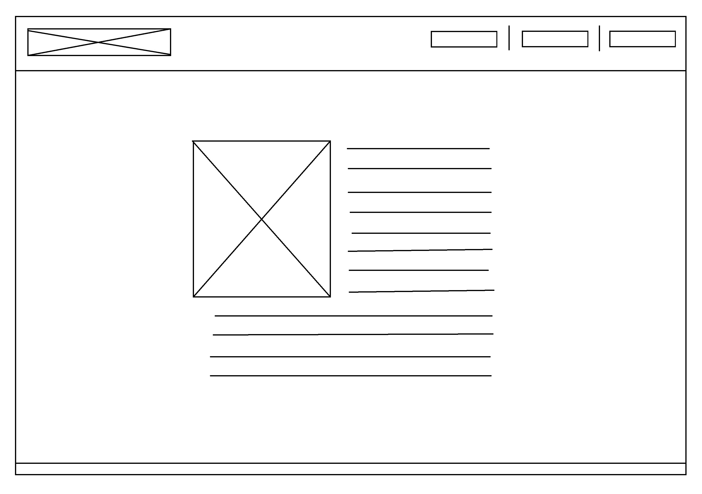
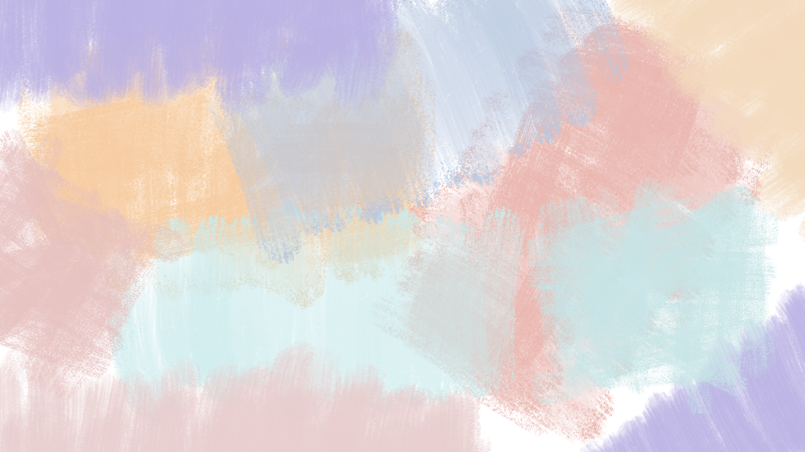
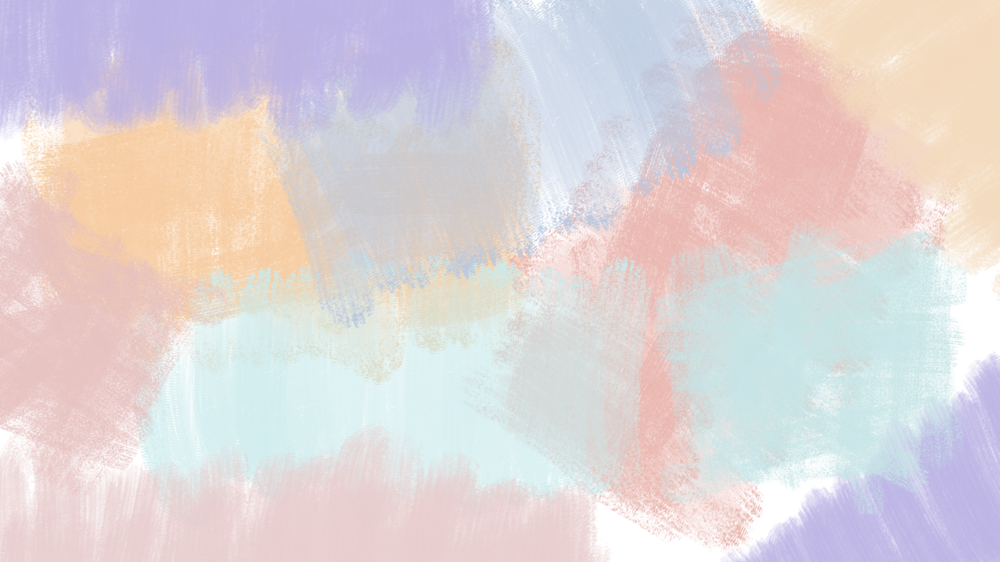
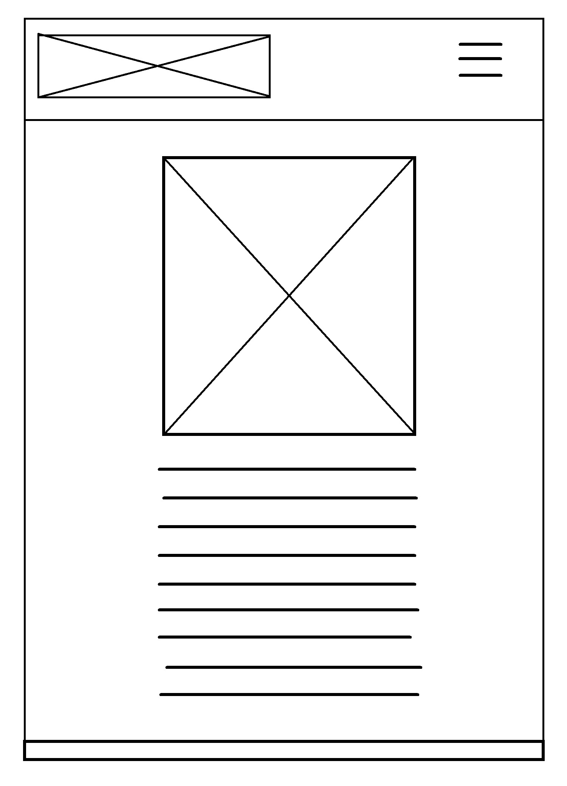

Első lépések
Az oldal tervezését hasonló website-ok keresésével, elemzésével kezdtem, ezekből próbáltam ötletet gyűjteni a felépítéshez. Ezt követően képeket nézegettem, elsősorban a design és a színvilág miatt.
Felépítés
Készítettem kezdetleges drótvázakat, először csak fekete-fehérben. Összeállítottam egy saját színkollekciót, ebben nagyrészt a Színpaletta nevezetű oldal volt segítségemre. Ahogy a képen is látszik, többnyire a kék és a rózsaszín közötti árnyalatok fordulnak elő, esetleg egy-két zöldes-narancssárgás verzió. Őszintén szólva, nem tudom, miért pont ezek, egyszerűen csak tetszettek.
 
A Főoldal színvilága, stílusa nagyjából már kezdett összeállni a fejemben, tudtam, mit szeretnék oda, így ehhez el is tudtam készíteni a háttérként használt képet Photoshop segítségével. Ezután következett a logó, melyet a saját kézírásomból alkottam.
A betűtípusokat is még a kódolás előtt kiválasztottam. A Portfólió felirathoz a Főoldalon mindenképp valamilyen egyszerű, gépi stílust szerettem volna, kompenzálva a logó formáját.
Végül kiszíneztem a drótvázakat és hozzáláttam a kódoláshoz.
Változtatások
Összességében szerintem sikerült megvalósítanom azt, amit szerettem volna. Néhány apróbb változtatást, például a szöveges oldalakon a fehér hátteret, a Galériában a kártyák színét/keretét/árnyékát, a menük különböző stílusát kódolás közben változtattam meg, illetve egészítettem ki, többnyire hirtelen ötlet alapján.
Gondot egyedül az eredeti tervek összeugró menüje jelentette. Más portfólió oldalaknál láttam ezt a fajta megoldást, miszerint egy bizonyos kijelzőméret alatt megjelenik a "hamburger-ikon" és lenyíló menüként jelenik meg. Ezt a tervet jó néhány kísérletezést követően elvetettem és felvetődött helyette egy olyan megoldás, hogy eleve lenyíló verziót készítek, ehhez végül hozzá sem kezdtem, mert így túl üresnek tűnt a fejléc. Végül a teljes menüt áthelyeztem a látható módon.
Inspirációk
Az ötletelésben sokat segített az, hogy különböző portfólió oldalakat is végigböngésztem. A legtöbb inspirációt Jeremy Cowart, Brent Stirton és Lara Jade oldala adta. Ezen kívül Pócsik Emese blogbejegyzéseit, munkáit néztem át.
Vázlatok
Főoldal terve
Bemutatkozás terve
Galéria terve
Hogyan készült oldal terve